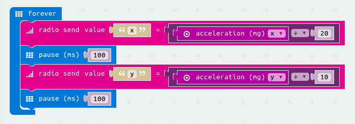

This code is for the remote controller for the Remote robot project. You will also need a Microbit with the Robot board code and a two wheeled robot.
We will collect information about how this microbit is tilted from the accelerometer and send this to the Robot board using the radio
Short on time? Download a completed version of the code.
The accelerometer tells us if the microbit is tilted and how much. Move your mouse over the left and right of the microbit and see how the numbers change.
Later we will use these numbers to control how the robot moves. First let's see what they look like.
Start a new, empty project at makecode.microbit.org and rename your project "Remote controller"
Add a show number block to your forever loop
Plugin in an acceleration (x) block into show number
Download this code to your Microbit.
Notice how tilting the board left and right shows different numbers.
Change the acceleration block to show Y instead of X
How does this change how the numbers change?
With the accelerometer block X shows how much the microbit is tilted left and right,
Y shows how much the Microbit is tilted forward and backwards.
We will use Y to move the robot backwards and forwards, and X to steer the robot left and right.
So now we can write the code to send these values to our robot with radio blocks. Before we send the X and Y numbers we do some maths, dividng them by 10 and 20. These numbers control how much the robot responds to the remote controller tilting. When you have set up your robot you can try changing these numbers to see how they change how the robot responds.
In the Start loop add a Radio set group block. This can be set to any number but it must be the same on the Robot board.
Add an icon block. This can be any icon, it's to help you remember which microbit has which code.
In the forever loop add a Radio send value "name" block, change "name" to "x".
Plug in a purple divide (÷) block.
Move the acceleration (mg) x block and plug it into the left side of the divide (÷) block.
Type 20 into the right hand side of the divide (÷) block.
Add a pause block and set ot to 100ms.
Duplicate these lines of code, changing both x's to y's, and 20 to 10.
Download the code to your microbit.
The remote controller is finished, but it doesn't do anything interesting until you have written the code for your Robot board.